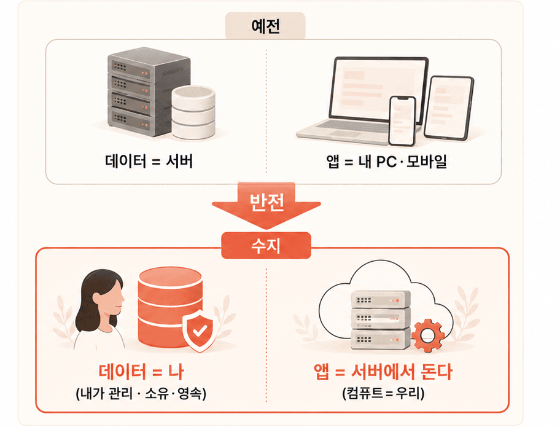

수지가 제안하는
세계관의
변화
데이터와 실행, 방향이 뒤집힌다.
웹·모바일 시대
서버가 데이터
를 쥐고
→
유저 PC/모바일에서 실행
에이전트 수지
서버가 실행하고
<-
유저가 데이터
를 제공
원래 분리돼 있었다
데이터와 실행은 원래 나뉘어 있었습니다 — 분리는 자연스러운 구조
방향만 반대일 뿐
에이전트 시대엔 방향이 뒤집힐 뿐 — 데이터 주권 + 24시간 온라인

MESSAGE
‘자비스’가 나타나기 위한 가장 중요한 관점의 전환 —
진짜 자비스가 나타난다.